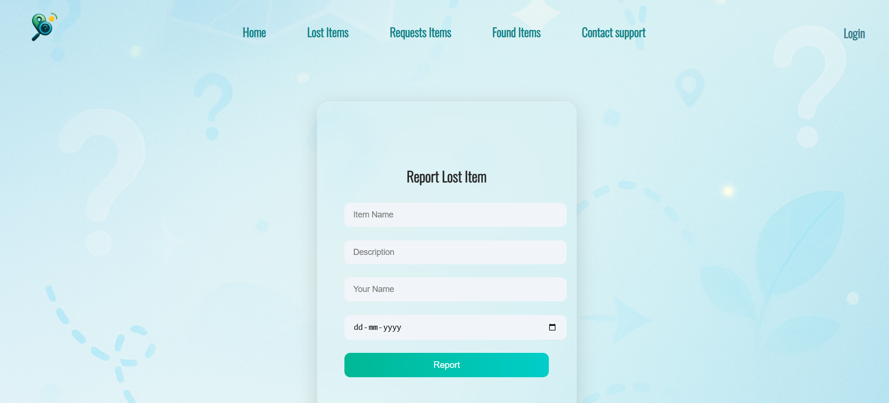
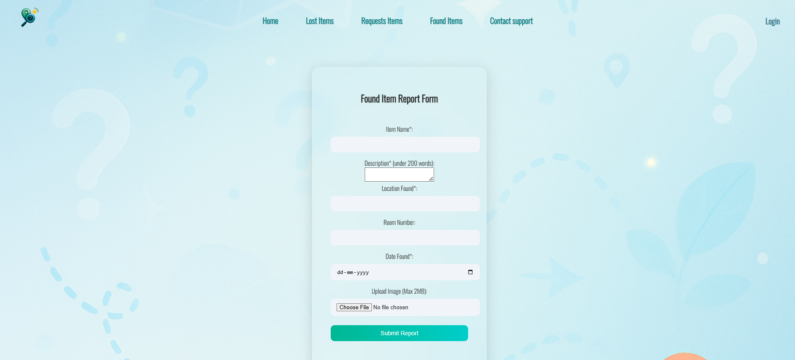
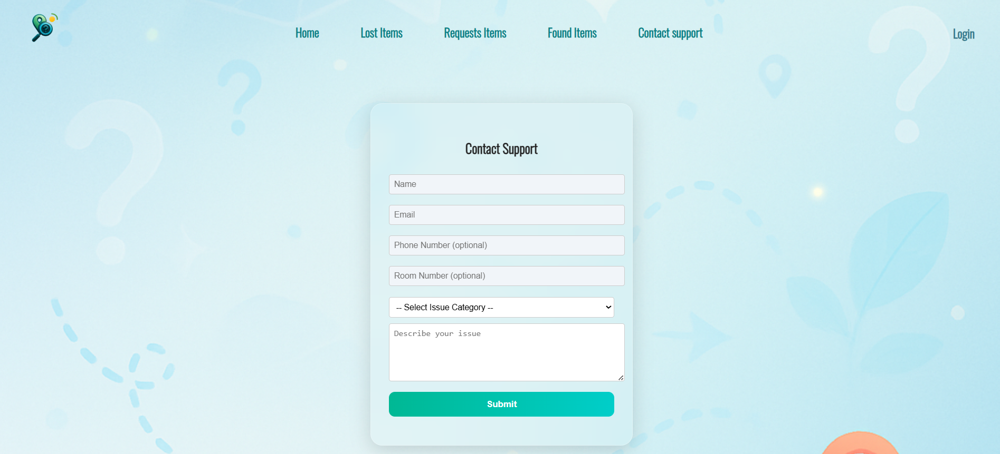
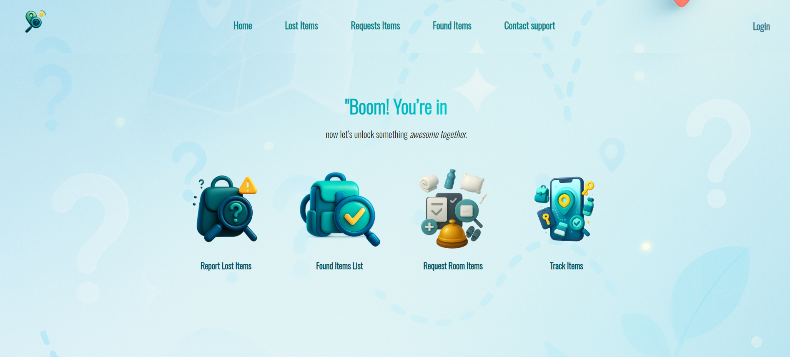
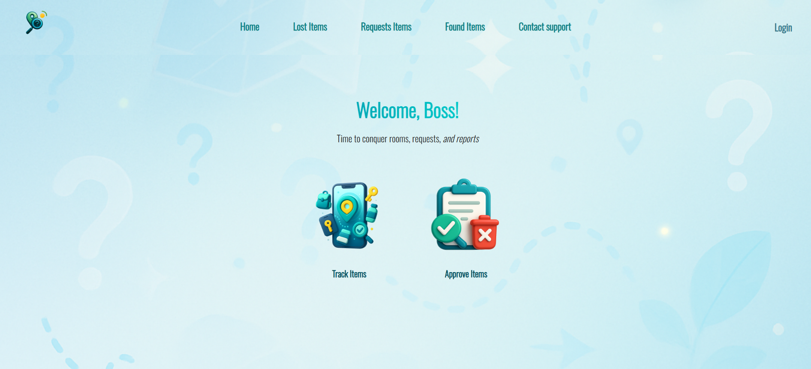
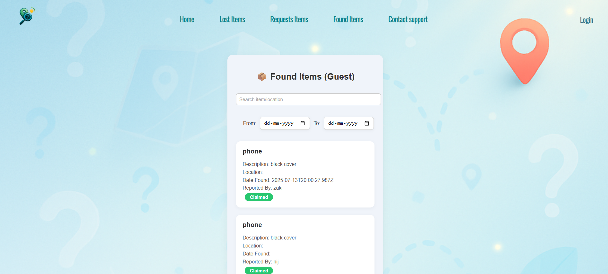
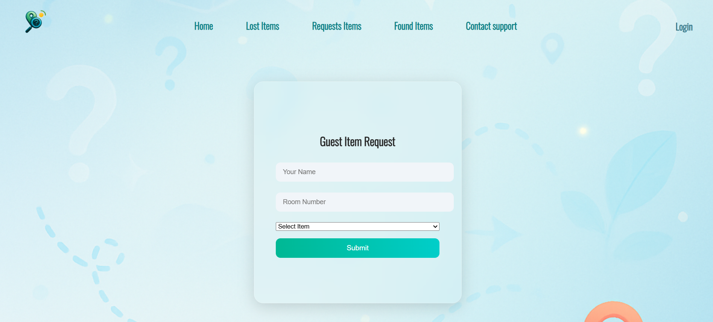
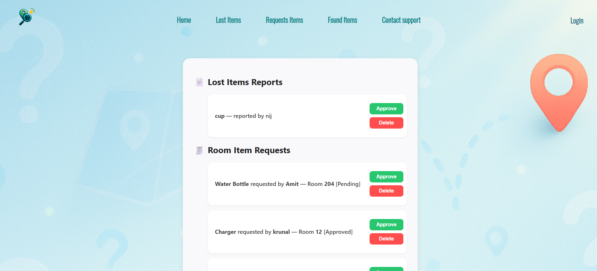
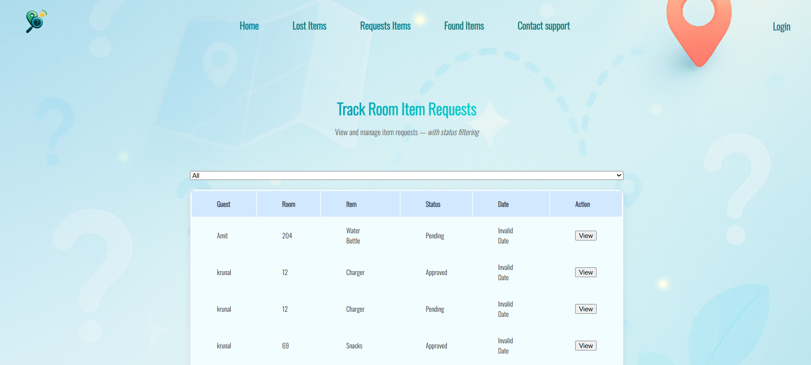

Purpose
Tracelly helps make lost-item recovery faster and more organized by providing a digital reporting and follow-up process.
Project Detail • Web Application
A lost & found reporting platform that helps users report missing items, track updates, and connect with finders or owners.
Tracelly helps make lost-item recovery faster and more organized by providing a digital reporting and follow-up process.
It simplifies how users report cases, how staff monitor requests, and how support teams respond to item-related issues.
React.js, Express.js, MongoDB, and a responsive web interface.
These screenshots reflect the main modules of the Tracelly project, including user login, item reporting, staff operations, and item request flows.
Here are the main interface screens for the Tracelly project, arranged in a professional gallery style.









